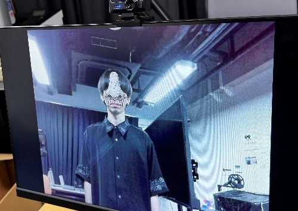
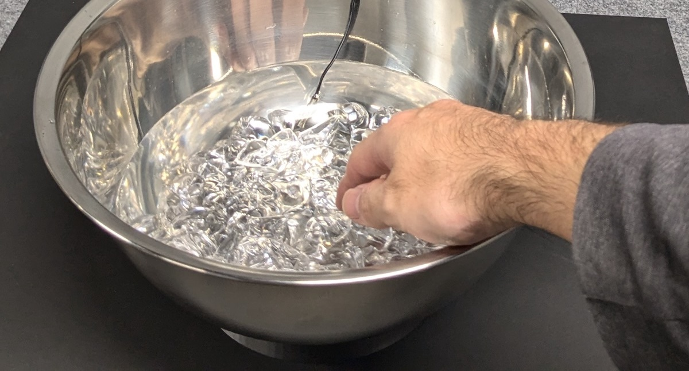

プロジェクト
研究プロジェクト

ENACTIVE利己の鏡
芥川龍之介『鼻』を題材としたインタラクティブアート作品。モニターの前に立つと自分の鼻にAI生成の鼻画像が重ねられ、笑顔に応じて鼻が大きくなる体験を通じて、小説の魅力を身体的に伝達する。
 MULTIMODAL
MULTIMODAL

HAPSONIC温冷覚フィードバック流体音楽インタフェース
流体を媒介とした音楽インタフェースに温冷覚フィードバックを組み込み、触れた温度感覚と音響が連動する体験を実現するシステムの検討。
 MULTIMODAL
MULTIMODAL
ゼミ演習
ゼミ活動指針
しらべる・かんがえる、つくる、はかる・くらべる・ほりさげる、つたえる ― 研究活動としての作品制作の流れを理解し、実践するための演習資料